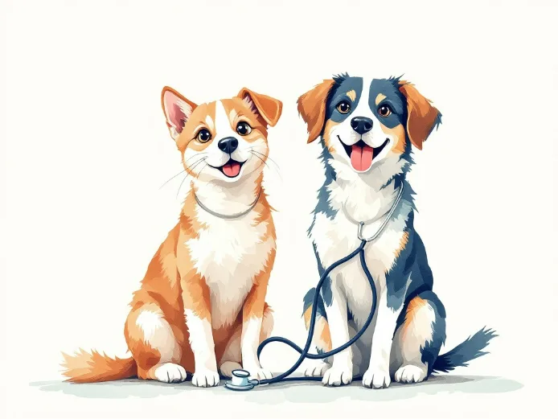
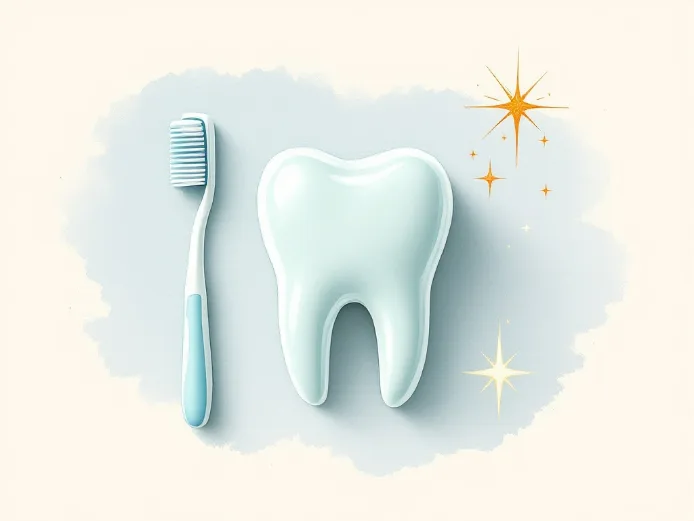
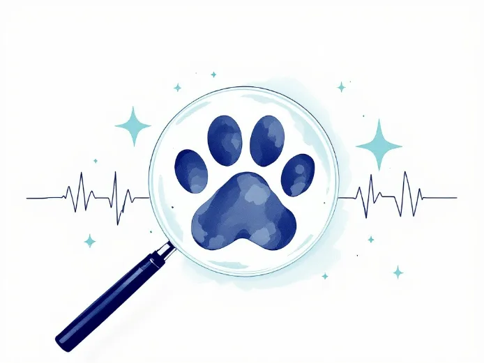

Wellness Exams
Head-to-tail checks, weight and dental tracking, and a plan you actually understand.
What we do
Routine care first, urgent care always available. Every visit ends with a plan you can actually repeat at home.

Head-to-tail checks, weight and dental tracking, and a plan you actually understand.
Core and lifestyle schedules, timed to your pet’s age and how they actually live.

Cleaning, extractions and the home routine that keeps you out of the chair.

On-site imaging and bloodwork, so answers come back in hours, not days.
Routine and soft-tissue procedures, with a call from the surgeon the same evening.
Walk in at any hour. A veterinarian is on site, not on call, every night of the year.

Radiography, ultrasound and a full in-house laboratory sit in the same building as the exam rooms. For most of what we see, that is the difference between sending you home with a guess and sending you home with a plan. When a sample does have to go out, we tell you that up front and we tell you when to expect the call.

By the age of three most dogs and cats have some degree of dental disease, and it is the single most under-treated thing we see. Every wellness visit includes an assessment. If a cleaning is needed we will say so, show you what we are looking at, and quote it in writing before anything is scheduled.
Pick a service and a day. We confirm by phone within the hour.
Any past records, the food they eat, and a list of what you have noticed.
Written, plain-language, and emailed before you reach the car park.